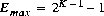
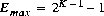
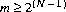
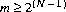

CHAPTER
4
Types, Values, and Variables
The Java programming language is a strongly typed language, which means that every variable and every expression has a type that is known at compile time. Types limit the values that a variable (§4.5) can hold or that an expression can produce, limit the operations supported on those values, and determine the meaning of the operations. Strong typing helps detect errors at compile time.
The types of the Java programming language are divided into two categories: primitive types and reference types. The primitive types (§4.2) are the boolean type and the numeric types. The numeric types are the integral types byte, short, int, long, and char, and the floating-point types float and double. The reference types (§4.3) are class types, interface types, and array types. There is also a special null type. An object (§4.3.1) is a dynamically created instance of a class type or a dynamically created array. The values of a reference type are references to objects. All objects, including arrays, support the methods of class Object (§4.3.2). String literals are represented by String objects (§4.3.3).
Names of types are used (§4.4) in declarations, casts, class instance creation expressions, array creation expressions, class literals, and instanceof operator expressions.
A variable (§4.5) is a storage location. A variable of a primitive type always holds a value of that exact type. A variable of a class type T can hold a null reference or a reference to an instance of class T or of any class that is a subclass of T. A variable of an interface type can hold a null reference or a reference to any instance of any class that implements the interface. If T is a primitive type, then a variable of type "array of T" can hold a null reference or a reference to any array of type "array of T"; if T is a reference type, then a variable of type "array of T" can hold a null reference or a reference to any array of type "array of S" such that type S is assignable (§5.2) to type T. A variable of type Object can hold a null reference or a reference to any object, whether class instance or array.
4.1 The Kinds of Types and Values
There are two kinds of types in the Java programming language: primitive types (§4.2) and reference types (§4.3). There are, correspondingly, two kinds of data values that can be stored in variables, passed as arguments, returned by methods, and operated on: primitive values (§4.2) and reference values (§4.3).
Type:
PrimitiveType
ReferenceType
There is also a special null type, the type of the expression null, which has no name. Because the null type has no name, it is impossible to declare a variable of the null type or to cast to the null type. The null reference is the only possible value of an expression of null type. The null reference can always be cast to any reference type. In practice, the programmer can ignore the null type and just pretend that null is merely a special literal that can be of any reference type.
4.2 Primitive Types and Values
A primitive type is predefined by the Java programming language and named by its reserved keyword (§3.9):
PrimitiveType:
NumericType
boolean
NumericType:
IntegralType
FloatingPointType
IntegralType: one of
byte short int long char
FloatingPointType: one of
float double
Primitive values do not share state with other primitive values. A variable whose type is a primitive type always holds a primitive value of that same type. The value of a variable of primitive type can be changed only by assignment operations on that variable.
The numeric types are the integral types and the floating-point types.
The integral types are byte, short, int, and long, whose values are 8-bit, 16-bit, 32-bit and 64-bit signed two's-complement integers, respectively, and char, whose values are 16-bit unsigned integers representing Unicode characters.
The floating-point types are float, whose values include the 32-bit IEEE 754 floating-point numbers, and double, whose values include the 64-bit IEEE 754 floating-point numbers.
The boolean type has exactly two values: true and false.
4.2.1 Integral Types and Values
The values of the integral types are integers in the following ranges:
- For
byte, from -128 to 127, inclusive
- For
short, from -32768 to 32767, inclusive
- For
int, from -2147483648 to 2147483647, inclusive
- For
long, from -9223372036854775808 to 9223372036854775807, inclusive
- For
char, from '\u0000' to '\uffff' inclusive, that is, from 0 to 65535
4.2.2 Integer Operations
The Java programming language provides a number of operators that act on integral values:
- The comparison operators, which result in a value of type
boolean:
- The numerical comparison operators
<, <=, >, and >= (§15.20.1)
- The numerical equality operators
== and != (§15.21.1)
- The numerical operators, which result in a value of type
int or long:
- The conditional operator
? : (§15.25)
- The cast operator, which can convert from an integral value to a value of any specified numeric type (§5.5, §15.16)
- The string concatenation operator
+ (§15.18.1), which, when given a String operand and an integral operand, will convert the integral operand to a String representing its value in decimal form, and then produce a newly created String that is the concatenation of the two strings
Other useful constructors, methods, and constants are predefined in the classes Byte, Short, Integer, Long, and Character.
If an integer operator other than a shift operator has at least one operand of type long, then the operation is carried out using 64-bit precision, and the result of the numerical operator is of type long. If the other operand is not long, it is first widened (§5.1.4) to type long by numeric promotion (§5.6). Otherwise, the operation is carried out using 32-bit precision, and the result of the numerical operator is of type int. If either operand is not an int, it is first widened to type int by numeric promotion.
The built-in integer operators do not indicate overflow or underflow in any way. The only numeric operators that can throw an exception (§11) are the integer divide operator / (§15.17.2) and the integer remainder operator % (§15.17.3), which throw an ArithmeticException if the right-hand operand is zero.
The example:
class Test {
public static void main(String[] args) {
int i = 1000000;
System.out.println(i * i);
long l = i;
System.out.println(l * l);
System.out.println(20296 / (l - i));
}
}
produces the output:
-727379968
1000000000000
and then encounters an ArithmeticException in the division by l - i, because l - i is zero. The first multiplication is performed in 32-bit precision, whereas the second multiplication is a long multiplication. The value -727379968 is the decimal value of the low 32 bits of the mathematical result, 1000000000000, which is a value too large for type int.
Any value of any integral type may be cast to or from any numeric type. There are no casts between integral types and the type boolean.
4.2.3 Floating-Point Types, Formats, and Values
The floating-point types are float and double, which are conceptually associated with the single-precision 32-bit and double-precision 64-bit format IEEE 754 values and operations as specified in IEEE Standard for Binary Floating-Point Arithmetic, ANSI/IEEE Standard 754-1985 (IEEE, New York).
The IEEE 754 standard includes not only positive and negative numbers that consist of a sign and magnitude, but also positive and negative zeros, positive and negative infinities, and special Not-a-Number values (hereafter abbreviated NaN). A NaN value is used to represent the result of certain invalid operations such as dividing zero by zero. NaN constants of both float and double type are predefined as Float.NaN and Double.NaN.
Every implementation of the Java programming language is required to support two standard sets of floating-point values, called the float value set and the double value set. In addition, an implementation of the Java programming language may support either or both of two extended-exponent floating-point value sets, called the float-extended-exponent value set and the double-extended-exponent value set. These extended-exponent value sets may, under certain circumstances, be used instead of the standard value sets to represent the values of expressions of type float or double (§5.1.8, §15.4).
The finite nonzero values of any floating-point value set can all be expressed in the form  , where s is +1 or -1, m is a positive integer less than
, where s is +1 or -1, m is a positive integer less than  , and e is an integer between
, and e is an integer between  and , inclusive, and where N and K are parameters that depend on the value set. Some values can be represented in this form in more than one way; for example, supposing that a value v in a value set might be represented in this form using certain values for s, m, and e, then if it happened that m were even and e were less than
and , inclusive, and where N and K are parameters that depend on the value set. Some values can be represented in this form in more than one way; for example, supposing that a value v in a value set might be represented in this form using certain values for s, m, and e, then if it happened that m were even and e were less than  , one could halve m and increase e by 1 to produce a second representation for the same value v. A representation in this form is called normalized if
, one could halve m and increase e by 1 to produce a second representation for the same value v. A representation in this form is called normalized if  ; otherwise the representation is said to be denormalized. If a value in a value set cannot be represented in such a way that , then the value is said to be a denormalized value, because it has no normalized representation.
; otherwise the representation is said to be denormalized. If a value in a value set cannot be represented in such a way that , then the value is said to be a denormalized value, because it has no normalized representation.
The constraints on the parameters N and K (and on the derived parameters Emin and Emax) for the two required and two optional floating-point value sets are summarized in Table 4.1.
Floating-point value set parameters
|
Parameter
|
float
|
float-extended-exponent
|
double
|
double-extended-exponent
|
N
|
24
|
24
|
53
|
53
| |
K
|
8
|
 11 11
|
11
|
15
| |
Emax
|
+127
|
+1023
|
+1023
|
+16383
| |
Emin
|
-126
|
 -1022 -1022
|
-1022
|
-16382
| |
|---|
Where one or both extended-exponent value sets are supported by an implementation, then for each supported extended-exponent value set there is a specific implementation-dependent constant K, whose value is constrained by Table 4.1; this value K in turn dictates the values for Emin and Emax.
Each of the four value sets includes not only the finite nonzero values that are ascribed to it above, but also NaN values and the four values positive zero, negative zero, positive infinity, and negative infinity.
Note that the constraints in Table 4.1 are designed so that every element of the float value set is necessarily also an element of the float-extended-exponent value set, the double value set, and the double-extended-exponent value set. Likewise, each element of the double value set is necessarily also an element of the double-extended-exponent value set. Each extended-exponent value set has a larger range of exponent values than the corresponding standard value set, but does not have more precision.
The elements of the float value set are exactly the values that can be represented using the single floating-point format defined in the IEEE 754 standard. The elements of the double value set are exactly the values that can be represented using the double floating-point format defined in the IEEE 754 standard. Note, however, that the elements of the float-extended-exponent and double-extended-exponent value sets defined here do not correspond to the values that can be represented using IEEE 754 single extended and double extended formats, respectively.
The float, float-extended-exponent, double, and double-extended-exponent value sets are not types. It is always correct for an implementation of the Java programming language to use an element of the float value set to represent a value of type float; however, it may be permissible in certain regions of code for an implementation to use an element of the float-extended-exponent value set instead. Similarly, it is always correct for an implementation to use an element of the double value set to represent a value of type double; however, it may be permissible in certain regions of code for an implementation to use an element of the double-extended-exponent value set instead.
Except for NaN, floating-point values are ordered; arranged from smallest to largest, they are negative infinity, negative finite nonzero values, positive and negative zero, positive finite nonzero values, and positive infinity.
IEEE 754 allows multiple distinct NaN values for each of its single and double floating-point formats. While each hardware architecture returns a particular bit pattern for NaN when a new NaN is generated, a programmer can also create NaNs with different bit patterns to encode, for example, retrospective diagnostic information.
For the most part, the Java platform treats NaN values of a given type as though collapsed into a single canonical value (and hence this specification normally refers to an arbitrary NaN as though to a canonical value). However, version 1.3 the Java platform introduced methods enabling the programmer to distinguish between NaN values: the Float.floatToRawIntBits and Double.doubleToRawLongBits methods. The interested reader is referred to the specifications for the Float and Double classes for more information.
Positive zero and negative zero compare equal; thus the result of the expression 0.0==-0.0 is true and the result of 0.0>-0.0 is false. But other operations can distinguish positive and negative zero; for example, 1.0/0.0 has the value positive infinity, while the value of 1.0/-0.0 is negative infinity.
NaN is unordered, so the numerical comparison operators <, <=, >, and >= return false if either or both operands are NaN (§15.20.1). The equality operator == returns false if either operand is NaN, and the inequality operator != returns true if either operand is NaN (§15.21.1). In particular, x!=x is true if and only if x is NaN, and (x<y) == !(x>=y) will be false if x or y is NaN.
Any value of a floating-point type may be cast to or from any numeric type. There are no casts between floating-point types and the type boolean.
4.2.4 Floating-Point Operations
The Java programming language provides a number of operators that act on floating-point values:
- The comparison operators, which result in a value of type
boolean:
- The numerical comparison operators
<, <=, >, and >= (§15.20.1)
- The numerical equality operators
== and != (§15.21.1)
- The numerical operators, which result in a value of type
float or double:
- The conditional operator
? : (§15.25)
- The cast operator, which can convert from a floating-point value to a value of any specified numeric type (§5.5, §15.16)
- The string concatenation operator
+ (§15.18.1), which, when given a String operand and a floating-point operand, will convert the floating-point operand to a String representing its value in decimal form (without information loss), and then produce a newly created String by concatenating the two strings
Other useful constructors, methods, and constants are predefined in the classes Float, Double, and Math.
If at least one of the operands to a binary operator is of floating-point type, then the operation is a floating-point operation, even if the other is integral.
If at least one of the operands to a numerical operator is of type double, then the operation is carried out using 64-bit floating-point arithmetic, and the result of the numerical operator is a value of type double. (If the other operand is not a double, it is first widened to type double by numeric promotion (§5.6).) Otherwise, the operation is carried out using 32-bit floating-point arithmetic, and the result of the numerical operator is a value of type float. If the other operand is not a float, it is first widened to type float by numeric promotion.
Operators on floating-point numbers behave as specified by IEEE 754 (with the exception of the remainder operator (§15.17.3)). In particular, the Java programming language requires support of IEEE 754 denormalized floating-point numbers and gradual underflow, which make it easier to prove desirable properties of particular numerical algorithms. Floating-point operations do not "flush to zero" if the calculated result is a denormalized number.
The Java programming language requires that floating-point arithmetic behave as if every floating-point operator rounded its floating-point result to the result precision. Inexact results must be rounded to the representable value nearest to the infinitely precise result; if the two nearest representable values are equally near, the one with its least significant bit zero is chosen. This is the IEEE 754 standard's default rounding mode known as round to nearest.
The language uses round toward zero when converting a floating value to an integer (§5.1.3), which acts, in this case, as though the number were truncated, discarding the mantissa bits. Rounding toward zero chooses at its result the format's value closest to and no greater in magnitude than the infinitely precise result.
Floating-point operators produce no exceptions (§11). An operation that overflows produces a signed infinity, an operation that underflows produces a denormalized value or a signed zero, and an operation that has no mathematically definite result produces NaN. All numeric operations with NaN as an operand produce NaN as a result. As has already been described, NaN is unordered, so a numeric comparison operation involving one or two NaNs returns false and any != comparison involving NaN returns true, including x!=x when x is NaN.
The example program:
class Test {
public static void main(String[] args) {
// An example of overflow:
double d = 1e308;
System.out.print("overflow produces infinity: ");
System.out.println(d + "*10==" + d*10);
// An example of gradual underflow:
d = 1e-305 * Math.PI;
System.out.print("gradual underflow: " + d + "\n ");
for (int i = 0; i < 4; i++)
System.out.print(" " + (d /= 100000));
System.out.println();
// An example of NaN:
System.out.print("0.0/0.0 is Not-a-Number: ");
d = 0.0/0.0;
System.out.println(d);
// An example of inexact results and rounding:
System.out.print("inexact results with float:");
for (int i = 0; i < 100; i++) {
float z = 1.0f / i;
if (z * i != 1.0f)
System.out.print(" " + i);
}
System.out.println();
// Another example of inexact results and rounding:
System.out.print("inexact results with double:");
for (int i = 0; i < 100; i++) {
double z = 1.0 / i;
if (z * i != 1.0)
System.out.print(" " + i);
}
System.out.println();
// An example of cast to integer rounding:
System.out.print("cast to int rounds toward 0: ");
d = 12345.6;
System.out.println((int)d + " " + (int)(-d));
}
}
produces the output:
overflow produces infinity: 1.0e+308*10==Infinity
gradual underflow: 3.141592653589793E-305
3.1415926535898E-310 3.141592653E-315 3.142E-320 0.0
0.0/0.0 is Not-a-Number: NaN
inexact results with float: 0 41 47 55 61 82 83 94 97
inexact results with double: 0 49 98
cast to int rounds toward 0: 12345 -12345
This example demonstrates, among other things, that gradual underflow can result in a gradual loss of precision.
The results when i is 0 involve division by zero, so that z becomes positive infinity, and z * 0 is NaN, which is not equal to 1.0.
4.2.5 The boolean Type and boolean Values
The boolean type represents a logical quantity with two possible values, indicated by the literals true and false (§3.10.3). The boolean operators are:
- The relational operators
== and != (§15.21.2)
- The logical-complement operator
! (§15.15.6)
- The logical operators
&, ^, and | (§15.22.2)
- The conditional-and and conditional-or operators
&& (§15.23) and || (§15.24)
- The conditional operator
? : (§15.25)
- The string concatenation operator
+ (§15.18.1), which, when given a String operand and a boolean operand, will convert the boolean operand to a String (either "true" or "false"), and then produce a newly created String that is the concatenation of the two strings
Boolean expressions determine the control flow in several kinds of statements:
A boolean expression also determines which subexpression is evaluated in the conditional ? : operator (§15.25).
Only boolean expressions can be used in control flow statements and as the first operand of the conditional operator ? :. An integer x can be converted to a boolean, following the C language convention that any nonzero value is true, by the expression x!=0. An object reference obj can be converted to a boolean, following the C language convention that any reference other than null is true, by the expression obj!=null.
A cast of a boolean value to type boolean is allowed (§5.1.1); no other casts on type boolean are allowed. A boolean can be converted to a string by string conversion (§5.4).
4.3 Reference Types and Values
There are three kinds of reference types: class types (§8), interface types (§9), and array types (§10).
ReferenceType:
ClassOrInterfaceType
ArrayType
ClassOrInterfaceType:
ClassType
InterfaceType
ClassType:
TypeName
InterfaceType:
TypeName
ArrayType:
Type [ ]
Names are described in §6; type names in §6.5 and, specifically, §6.5.5.
The sample code:
class Point { int[] metrics; }
interface Move { void move(int deltax, int deltay); }
declares a class type Point, an interface type Move, and uses an array type int[] (an array of int) to declare the field metrics of the class Point.
4.3.1 Objects
An object is a class instance or an array.
The reference values (often just references) are pointers to these objects, and a special null reference, which refers to no object.
A class instance is explicitly created by a class instance creation expression (§15.9). An array is explicitly created by an array creation expression (§15.9).
A new class instance is implicitly created when the string concatenation operator + (§15.18.1) is used in an expression, resulting in a new object of type String (§4.3.3). A new array object is implicitly created when an array initializer expression (§10.6) is evaluated; this can occur when a class or interface is initialized (§12.4), when a new instance of a class is created (§15.9), or when a local variable declaration statement is executed (§14.4).
Many of these cases are illustrated in the following example:
class Point {
int x, y;
Point() { System.out.println("default"); }
Point(int x, int y) { this.x = x; this.y = y; }
// A Point instance is explicitly created at class initialization time:
static Point origin = new Point(0,0);
// A String can be implicitly created by a + operator:
public String toString() {
return "(" + x + "," + y + ")";
}
}
class Test {
public static void main(String[] args) {
// A Point is explicitly created using newInstance:
Point p = null;
try {
p = (Point)Class.forName("Point").newInstance();
} catch (Exception e) {
System.out.println(e);
}
// An array is implicitly created by an array constructor:
Point a[] = { new Point(0,0), new Point(1,1) };
// Strings are implicitly created by + operators:
System.out.println("p: " + p);
System.out.println("a: { " + a[0] + ", "
+ a[1] + " }");
// An array is explicitly created by an array creation expression:
String sa[] = new String[2];
sa[0] = "he"; sa[1] = "llo";
System.out.println(sa[0] + sa[1]);
}
}
which produces the output:
default
p: (0,0)
a: { (0,0), (1,1) }
hello
The operators on references to objects are:
- Field access, using either a qualified name (§6.6) or a field access expression (§15.11)
- Method invocation (§15.12)
- The cast operator (§5.5, §15.16)
- The string concatenation operator
+ (§15.18.1), which, when given a String operand and a reference, will convert the reference to a String by invoking the toString method of the referenced object (using "null" if either the reference or the result of toString is a null reference), and then will produce a newly created String that is the concatenation of the two strings
- The
instanceof operator (§15.20.2)
- The reference equality operators
== and != (§15.21.3)
- The conditional operator
? : (§15.25).
There may be many references to the same object. Most objects have state, stored in the fields of objects that are instances of classes or in the variables that are the components of an array object. If two variables contain references to the same object, the state of the object can be modified using one variable's reference to the object, and then the altered state can be observed through the reference in the other variable.
The example program:
class Value { int val; }
class Test {
public static void main(String[] args) {
int i1 = 3;
int i2 = i1;
i2 = 4;
System.out.print("i1==" + i1);
System.out.println(" but i2==" + i2);
Value v1 = new Value();
v1.val = 5;
Value v2 = v1;
v2.val = 6;
System.out.print("v1.val==" + v1.val);
System.out.println(" and v2.val==" + v2.val);
}
}
produces the output:
i1==3 but i2==4
v1.val==6 and v2.val==6
because v1.val and v2.val reference the same instance variable (§4.5.3) in the one Value object created by the only new expression, while i1 and i2 are different variables.
See §10 and §15.10 for examples of the creation and use of arrays.
Each object has an associated lock (§17.13), which is used by synchronized methods (§8.4.3) and the synchronized statement (§14.18) to provide control over concurrent access to state by multiple threads (§17.12).
4.3.2 The Class Object
The class Object is a superclass (§8.1) of all other classes. A variable of type Object can hold a reference to any object, whether it is an instance of a class or an array (§10). All class and array types inherit the methods of class Object, which are summarized here:
package java.lang;
public class Object {
public final Class getClass() { . . . }
public String toString() { . . . }
public boolean equals(Object obj) { . . . }
public int hashCode() { . . . }
protected Object clone()
throws CloneNotSupportedException { . . . }
public final void wait()
throws IllegalMonitorStateException,
InterruptedException { . . . }
public final void wait(long millis)
throws IllegalMonitorStateException,
InterruptedException { . . . }
public final void wait(long millis, int nanos) { . . . }
throws IllegalMonitorStateException,
InterruptedException { . . . }
public final void notify() { . . . }
throws IllegalMonitorStateException
public final void notifyAll() { . . . }
throws IllegalMonitorStateException
protected void finalize()
throws Throwable { . . . }
}
The members of Object are as follows:
- The method
getClass returns the Class object that represents the class of the object. A Class object exists for each reference type. It can be used, for example, to discover the fully qualified name of a class, its members, its immediate superclass, and any interfaces that it implements. A class method that is declared synchronized (§8.4.3.6) synchronizes on the lock associated with the Class object of the class.
- The method
toString returns a String representation of the object.
- The methods
equals and hashCode are very useful in hashtables such as java.util.Hashtable. The method equals defines a notion of object equality, which is based on value, not reference, comparison.
- The method
clone is used to make a duplicate of an object.
- The methods
wait, notify, and notifyAll are used in concurrent programming using threads, as described in §17.
- The method
finalize is run just before an object is destroyed and is described in §12.6.
4.3.3 The Class String
Instances of class String represent sequences of Unicode characters. A String object has a constant (unchanging) value. String literals (§3.10.5) are references to instances of class String.
The string concatenation operator + (§15.18.1) implicitly creates a new String object.
4.3.4 When Reference Types Are the Same
Two reference types are the same compile-time type if they have the same binary name (§13.1), in which case they are sometimes said to be the same class or the same interface.
At run time, several reference types with the same binary name may be loaded simultaneously by different class loaders. These types may or may not represent the same type declaration. Even if two such types do represent the same type declaration, they are considered distinct.
Two reference types are the same run-time type if:
- They are both class or both interface types, are loaded by the same class loader, and have the same binary name (§13.1), in which case they are sometimes said to be the same run-time class or the same run-time interface.
- They are both array types, and their component types are the same run-time type(§10).
4.4 Where Types Are Used
Types are used when they appear in declarations or in certain expressions.
The following code fragment contains one or more instances of most kinds of usage of a type:
import java.util.Random;
class MiscMath {
int divisor;
MiscMath(int divisor) {
this.divisor = divisor;
}
float ratio(long l) {
try {
l /= divisor;
} catch (Exception e) {
if (e instanceof ArithmeticException)
l = Long.MAX_VALUE;
else
l = 0;
}
return (float)l;
}
double gausser() {
Random r = new Random();
double[] val = new double[2];
val[0] = r.nextGaussian();
val[1] = r.nextGaussian();
return (val[0] + val[1]) / 2;
}
}
In this example, types are used in declarations of the following:
- Imported types (§7.5); here the type
Random, imported from the type java.util.Random of the package java.util, is declared
- Fields, which are the class variables and instance variables of classes (§8.3), and constants of interfaces (§9.3); here the field
divisor in the class MiscMath is declared to be of type int
- Method parameters (§8.4.1); here the parameter
l of the method ratio is declared to be of type long
- Method results (§8.4); here the result of the method
ratio is declared to be of type float, and the result of the method gausser is declared to be of type double
- Constructor parameters (§8.8.1); here the parameter of the constructor for
MiscMath is declared to be of type int
- Local variables (§14.4, §14.13); the local variables
r and val of the method gausser are declared to be of types Random and double[] (array of double)
- Exception handler parameters (§14.19); here the exception handler parameter
e of the catch clause is declared to be of type Exception
and in expressions of the following kinds:
- Class instance creations (§15.9); here a local variable
r of method gausser is initialized by a class instance creation expression that uses the type Random
- Array creations (§15.10); here the local variable
val of method gausser is initialized by an array creation expression that creates an array of double with size 2
- Casts (§15.16); here the
return statement of the method ratio uses the float type in a cast
- The
instanceof operator (§15.20.2); here the instanceof operator tests whether e is assignment compatible with the type ArithmeticException
4.5 Variables
A variable is a storage location and has an associated type, sometimes called its compile-time type, that is either a primitive type (§4.2) or a reference type (§4.3). A variable always contains a value that is assignment compatible (§5.2) with its type. A variable's value is changed by an assignment (§15.26) or by a prefix or postfix ++ (increment) or -- (decrement) operator (§15.14.1, §15.14.2, §15.15.1, §15.15.2).
Compatibility of the value of a variable with its type is guaranteed by the design of the Java programming language. Default values are compatible (§4.5.5) and all assignments to a variable are checked for assignment compatibility (§5.2), usually at compile time, but, in a single case involving arrays, a run-time check is made (§10.10).
4.5.1 Variables of Primitive Type
A variable of a primitive type always holds a value of that exact primitive type.
4.5.2 Variables of Reference Type
A variable of reference type can hold either of the following:
- A null reference
- A reference to any object (§4.3) whose class (§4.5.6) is assignment compatible (§5.2) with the type of the variable
4.5.3 Kinds of Variables
There are seven kinds of variables:
- A class variable is a field declared using the keyword
static within a class declaration (§8.3.1.1), or with or without the keyword static within an interface declaration (§9.3). A class variable is created when its class or interface is prepared (§12.3.2) and is initialized to a default value (§4.5.5). The class variable effectively ceases to exist when its class or interface is unloaded (§12.7).
- An instance variable is a field declared within a class declaration without using the keyword
static (§8.3.1.1). If a class T has a field a that is an instance variable, then a new instance variable a is created and initialized to a default value (§4.5.5) as part of each newly created object of class T or of any class that is a subclass of T (§8.1.3). The instance variable effectively ceases to exist when the object of which it is a field is no longer referenced, after any necessary finalization of the object (§12.6) has been completed.
- Array components are unnamed variables that are created and initialized to default values (§4.5.5) whenever a new object that is an array is created (§15.10). The array components effectively cease to exist when the array is no longer referenced. See §10 for a description of arrays.
- Method parameters (§8.4.1) name argument values passed to a method. For every parameter declared in a method declaration, a new parameter variable is created each time that method is invoked (§15.12). The new variable is initialized with the corresponding argument value from the method invocation. The method parameter effectively ceases to exist when the execution of the body of the method is complete.
- Constructor parameters (§8.8.1) name argument values passed to a constructor. For every parameter declared in a constructor declaration, a new parameter variable is created each time a class instance creation expression (§15.9) or explicit constructor invocation (§8.8.5) invokes that constructor. The new variable is initialized with the corresponding argument value from the creation expression or constructor invocation. The constructor parameter effectively ceases to exist when the execution of the body of the constructor is complete.
- An exception-handler parameter is created each time an exception is caught by a
catch clause of a try statement (§14.19). The new variable is initialized with the actual object associated with the exception (§11.3, §14.17). The exception-handler parameter effectively ceases to exist when execution of the block associated with the catch clause is complete.
- Local variables are declared by local variable declaration statements (§14.4). Whenever the flow of control enters a block (§14.2) or
for statement (§14.13), a new variable is created for each local variable declared in a local variable declaration statement immediately contained within that block or for statement. A local variable declaration statement may contain an expression which initializes the variable. The local variable with an initializing expression is not initialized, however, until the local variable declaration statement that declares it is executed. (The rules of definite assignment (§16) prevent the value of a local variable from being used before it has been initialized or otherwise assigned a value.) The local variable effectively ceases to exist when the execution of the block or for statement is complete.
Were it not for one exceptional situation, a local variable could always be regarded as being created when its local variable declaration statement is executed. The exceptional situation involves the switch statement (§14.10), where it is possible for control to enter a block but bypass execution of a local variable declaration statement. Because of the restrictions imposed by the rules of definite assignment (§16), however, the local variable declared by such a bypassed local variable declaration statement cannot be used before it has been definitely assigned a value by an assignment expression (§15.26).
The following example contains several different kinds of variables:
class Point {
static int numPoints; // numPoints is a class variable
int x, y; // x and y are instance variables
int[] w = new int[10]; // w[0] is an array component
int setX(int x) { // x is a method parameter
int oldx = this.x; // oldx is a local variable
this.x = x;
return oldx;
}
}
4.5.4 final Variables
A variable can be declared final. A final variable may only be assigned to once. It is a compile time error if a final variable is assigned to unless it is definitely unassigned (§16) immediately prior to the assignment.
A blank final is a final variable whose declaration lacks an initializer.
Once a final variable has been assigned, it always contains the same value. If a final variable holds a reference to an object, then the state of the object may be changed by operations on the object, but the variable will always refer to the same object. This applies also to arrays, because arrays are objects; if a final variable holds a reference to an array, then the components of the array may be changed by operations on the array, but the variable will always refer to the same array.
Declaring a variable final can serve as useful documentation that its value will not change and can help avoid programming errors.
In the example:
class Point {
int x, y;
int useCount;
Point(int x, int y) { this.x = x; this.y = y; }
final static Point origin = new Point(0, 0);
}
the class Point declares a final class variable origin. The origin variable holds a reference to an object that is an instance of class Point whose coordinates are (0, 0). The value of the variable Point.origin can never change, so it always refers to the same Point object, the one created by its initializer. However, an operation on this Point object might change its state-for example, modifying its useCount or even, misleadingly, its x or y coordinate.
4.5.5 Initial Values of Variables
Every variable in a program must have a value before its value is used:
- Each class variable, instance variable, or array component is initialized with a default value when it is created (§15.9, §15.10):
- For type
byte, the default value is zero, that is, the value of (byte)0.
- For type
short, the default value is zero, that is, the value of (short)0.
- For type
int, the default value is zero, that is, 0.
- For type
long, the default value is zero, that is, 0L.
- For type
float, the default value is positive zero, that is, 0.0f.
- For type
double, the default value is positive zero, that is, 0.0d.
- For type
char, the default value is the null character, that is, '\u0000'.
- For type
boolean, the default value is false.
- For all reference types (§4.3), the default value is
null.
- Each method parameter (§8.4.1) is initialized to the corresponding argument value provided by the invoker of the method (§15.12).
- Each constructor parameter (§8.8.1) is initialized to the corresponding argument value provided by a class instance creation expression (§15.9) or explicit constructor invocation (§8.8.5).
- An exception-handler parameter (§14.19) is initialized to the thrown object representing the exception (§11.3, §14.17).
- A local variable (§14.4, §14.13) must be explicitly given a value before it is used, by either initialization (§14.4) or assignment (§15.26), in a way that can be verified by the compiler using the rules for definite assignment (§16).
The example program:
class Point {
static int npoints;
int x, y;
Point root;
}
class Test {
public static void main(String[] args) {
System.out.println("npoints=" + Point.npoints);
Point p = new Point();
System.out.println("p.x=" + p.x + ", p.y=" + p.y);
System.out.println("p.root=" + p.root);
}
}
prints:
npoints=0
p.x=0, p.y=0
p.root=null
illustrating the default initialization of npoints, which occurs when the class Point is prepared (§12.3.2), and the default initialization of x, y, and root, which occurs when a new Point is instantiated. See §12 for a full description of all aspects of loading, linking, and initialization of classes and interfaces, plus a description of the instantiation of classes to make new class instances.
4.5.6 Types, Classes, and Interfaces
In the Java programming language, every variable and every expression has a type that can be determined at compile time. The type may be a primitive type or a reference type. Reference types include class types and interface types. Reference types are introduced by type declarations, which include class declarations (§8.1) and interface declarations (§9.1). We often use the term type to refer to either a class or an interface.
Every object belongs to some particular class: the class that was mentioned in the creation expression that produced the object, the class whose Class object was used to invoke a reflective method to produce the object, or the String class for objects implicitly created by the string concatenation operator + (§15.18.1). This class is called the class of the object. (Arrays also have a class, as described at the end of this section.) An object is said to be an instance of its class and of all superclasses of its class.
Sometimes a variable or expression is said to have a "run-time type". This refers to the class of the object referred to by the value of the variable or expression at run time, assuming that the value is not null.
The compile time type of a variable is always declared, and the compile time type of an expression can be deduced at compile time. The compile time type limits the possible values that the variable can hold or the expression can produce at run time. If a run-time value is a reference that is not null, it refers to an object or array that has a class, and that class will necessarily be compatible with the compile-time type.
Even though a variable or expression may have a compile-time type that is an interface type, there are no instances of interfaces. A variable or expression whose type is an interface type can reference any object whose class implements (§8.1.4) that interface.
Here is an example of creating new objects and of the distinction between the type of a variable and the class of an object:
public interface Colorable {
void setColor(byte r, byte g, byte b);
}
class Point { int x, y; }
class ColoredPoint extends Point implements Colorable {
byte r, g, b;
public void setColor(byte rv, byte gv, byte bv) {
r = rv; g = gv; b = bv;
}
}
class Test {
public static void main(String[] args) {
Point p = new Point();
ColoredPoint cp = new ColoredPoint();
p = cp;
Colorable c = cp;
}
}
In this example:
- The local variable
p of the method main of class Test has type Point and is initially assigned a reference to a new instance of class Point.
- The local variable
cp similarly has as its type ColoredPoint, and is initially assigned a reference to a new instance of class ColoredPoint.
- The assignment of the value of
cp to the variable p causes p to hold a reference to a ColoredPoint object. This is permitted because ColoredPoint is a subclass of Point, so the class ColoredPoint is assignment compatible (§5.2) with the type Point. A ColoredPoint object includes support for all the methods of a Point. In addition to its particular fields r, g, and b, it has the fields of class Point, namely x and y.
- The local variable
c has as its type the interface type Colorable, so it can hold a reference to any object whose class implements Colorable; specifically, it can hold a reference to a ColoredPoint.
- Note that an expression such as "
new Colorable()" is not valid because it is not possible to create an instance of an interface, only of a class.
Every array also has a class; the method getClass, when invoked for an array object, will return a class object (of class Class) that represents the class of the array.
The classes for arrays have strange names that are not valid identifiers; for example, the class for an array of int components has the name "[I" and so the value of the expression:
new int[10].getClass().getName()
is the string "[I"; see the specification of Class.getName for details.
Copyright © 2000 Sun Microsystems, Inc.
All rights reserved
Please send any comments or corrections to jls@java.sun.com